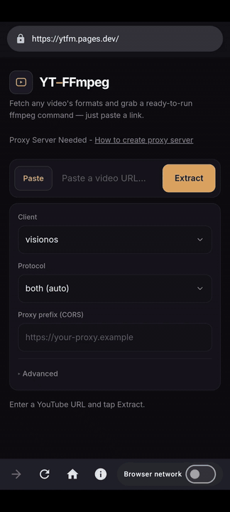
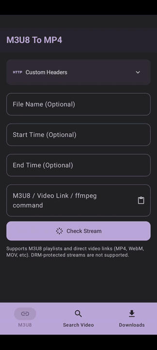

Looking for youtube video downloader? Here, you will learn a method to download videos from YouTube on Android in any resolution.
Follow the steps in order to download videos from youtube on your android device.
Here is the CORS Tester app link - Google PlayStore

https://ytfm.pages.dev.App Network.Here is the HLS to MP4 Downloader app link - Google PlayStore

Check Stream